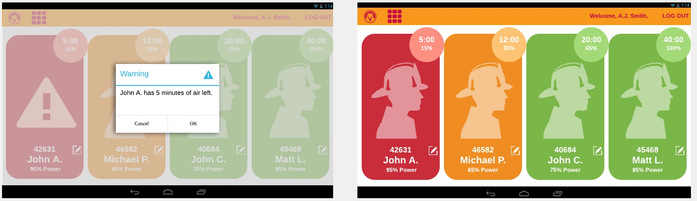
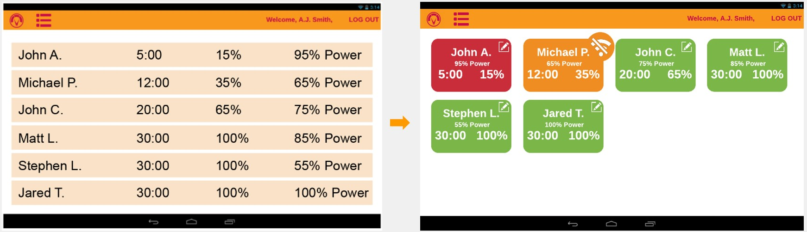

One of the main risks firefighters suffer from is the possibility of running out of oxygen before leaving the site. The current SCBA systems have an oxygen level monitoring system that consists only of an alarm when the tank is running low, which can easily go unheard by the firefighter. As my capstone project, I designed a new monitoring apparatus that can predict the remaining time with oxygen and send real time information to the commander to better the workflow of the firefighting unit. One of the main challenges of this project was designing the user interface for the monitoring app. It needed to be easy to understand, attract attention to firefighters potentially at risk, and still show all of the broadcasted information.
The first step in creating the app was researching all of the requirements. I interviewed three firefighter commanders and asked them what kinds of metrics they would like to have to monitor their subordinates while on the field. They indicated the desire to know the oxygen levels and estimated remaining time, as well as the photo and name of each firefighter to identify them more easily. They also expressed the need for an alarm for when an individual’s tank is running too low.
After the first draft of the app, I asked for feedback from my original interviewees, and noticed a need to make it simpler. I changed the design of the monitor to show each firefighter in a card, instead of them all in a list, and ordered them in terms of priority (remaining oxygen time). Each card was then colored based on the oxygen level in the tank. This made it easier for commanders to understand the situation at a glance and make quick decisions.
In the first draft of the app, there was a window used only to add new firefighters to the database. To streamline this process, I made it so the new firefighter window would only show when an unknown ID was connected and added the tap and hold functionality to edit personal data at any time.
The app and system were presented at the 2019 Capstone Expo, at Georgia Tech, and gathered several good reviews. According to one visiting firefighter, “this whole system could be a lifesaver. I hope it gets put in production”.